기계조립산업기사 (2003-03-16 기출문제)
1과목: 기계가공법 및 안전관리
1. 보올나사(BALL SCREW)가 쓰인 공작기계는?
- 수치제어선반
- 세이퍼
- 플레이너
- 슬로터
(정답률: 알수없음)

2. 바이트의 종류를 구조상으로 분류하면 3가지로 분류할 수 있다. 이에 해당되지 않는 것은?
- 단체 바이트
- 분별식 바이트
- 날붙이 바이트
- 클램프 바이트
(정답률: 알수없음)
3. 선반 작업에서 하중이 같을 때 주축의 회전 속도를 크게 하고자 한다. 다음 중 옳은 것은?
- 점도가 높은 기름을 사용한다.
- 점도가 낮은 기름을 사용한다.
- 하중이 같으므로 바꾸지 않아도 된다.
- 기름의 양을 많이 준다.
(정답률: 알수없음)
4. 선반작업시 재료의 무게가 대형일 때, 센터(center)끝의 각도는 얼마인가?
- 45°
- 60°
- 90°
- 120°
(정답률: 알수없음)
5. 생산형 밀링머신에 관한 설명으로 틀린 것은?
- 대량생산에 적합하도록 어느정도 단순화, 자동화된 것이다.
- 회전 테이블형 밀링머신은 1개의 스핀들 헤드를 써서 두 종류의 가공을 동시에 할 수 있다.
- 베드형 밀링머신이라고도 한다.
- 테이블은 상자형 베드 위에서 길이 방향으로만 움직인다.
(정답률: 알수없음)
6. 절삭속도 31.4 m/min인 8날 짜리 ø 20엔드밀로 소재를 가공할 때 이송속도는? (단, 밀링커터의 날 1개마다의 이송 fz = 0.⑤㎜이다.)
- 251.2㎜/min
- 25.12㎜/min
- 20㎜/min
- 200㎜/min
(정답률: 알수없음)
7. 드릴의 연삭에 관한 사항이다. 틀린 것은?
- 날끝각은 표준드릴에서 118° 이다.
- 날끝각은 굳은 재료일수록 적게하고 무른 재료 일수록 크게 한다.
- 절삭날의 길이를 좌우 같게 한다.
- 절삭날에 중심과 이루는 각과 여유각을 좌우 같게 한다.
(정답률: 알수없음)
8. 소화 및 방화대책에 관한 안전사항으로 옳은 것은?
- 전등의 삿갓등에 종이를 사용한다.
- 위험물이나 타기 쉬운 물질등에 소화기를 가까이 둔다.
- 모든 시설 및 장비를 정기적으로 안전 점검한다.
- 통로, 비상구, 소화기가 있는 곳에 물건을 놓아둔다.
(정답률: 알수없음)
9. 기계의 회전을 정지시킬 때 안전한 방법은?
- 공구로 정지시킨다.
- 손으로 정지시킨다.
- 스스로 정지하도록 한다.
- 발로 한다.
(정답률: 알수없음)
10. 대형 숫돌에서 숫돌에 화살표시가 된것이 있는 데, 이 화살표시는 어떤 의미인가?
- 평형검사를 하여 가벼운 방향 표시이다.
- 가장 무거운 곳으로 항상 지면에 가깝게 해야 되는 점 표시이다.
- 드레싱할 때 시작하는 점의 표시이다.
- 균열검사시 타격 위치를 표시한다.
(정답률: 알수없음)
11. 드릴링 머신의 작업 중 옳은 것은?
- 안전을 위해 긴 작업복을 착용한다.
- 칩은 회전중 와이어 브러쉬로 제거한다.
- 이동식 전기드릴은 반드시 접지시키지 않고 사용한다.
- 드릴작업에서는 보호안경을 써야 한다.
(정답률: 알수없음)
12. 절삭공구용 소결 초경합금의 화학성분이 아닌 것은?
- W(텅스텐)
- Co(코발트)
- Ti(티탄)
- Cr(크롬)
(정답률: 알수없음)
13. 삼침법으로 미터 숫나사의 유효경을 측정하였다. 유효지름은 얼마인가? (단, 마이크로 미터로 측정한 치수 : 43㎜, 나사의 피치 : 4㎜, 측정핀의 직경 : ø 5㎜이다.)
- 24.536㎜
- 31.464㎜
- 19.464㎜
- 18.464㎜
(정답률: 알수없음)
14. 지름 100㎜인 연강을 절삭속도 250 m/min로 선삭할 때에 주축의 회전수는?
- 약 79 r.p.m
- 약 76 r.p.m
- 약 796 r.p.m
- 약 769 r.p.m
(정답률: 알수없음)
15. 칩 형태 중 가공표면에 가장 좋은 결과를 주는 것은?
- 열단형
- 균열형
- 전단형
- 유동형
(정답률: 알수없음)
16. 해머작업 안전수칙 중 틀린 것은?
- 녹이슨 재료를 작업할때는 보안경을 착용한다.
- 장갑을 끼고 작업하지 않는다.
- 처음부터 큰 힘을 주어 작업한다.
- 자루가 불안정한 것은 사용하지 않는다.
(정답률: 알수없음)
17. 밀링머신에서 오버암의 한끝을 컬럼위에 고정하는 이유 중 가장 적당한 것은?
- 강력절삭을 하기위하여
- 회전속도를 높이기 위하여
- 작업을 편리하게 하기위하여
- 아버의 휘는 것을 방지하기 위하여
(정답률: 알수없음)
18. 삼각법에 의한 각도 측정방법의 설명이 아닌 것은?
- 사인바에 의한 각도측정
- NPL식 각도 게이지에 의한 각도측정
- 탄젠트바에 의한 각도측정
- 롤러에 의한 각도측정
(정답률: 알수없음)
19. 기어 절삭용 공구가 아닌 것은?
- 호브(Hob)
- 호운(Hone)
- 랙 커터
- 피니언 커터
(정답률: 알수없음)
20. 한계 게이지 측정방식의 특징 중 잘못된 것은?
- 제품의 호환성을 좋게 할 수 있다.
- 측정의 개인차를 줄일 수 있다.
- 측정이 쉽고 대량생산에 적합하다.
- 눈금이 없어 측정 실패율이 높다.
(정답률: 알수없음)
2과목: 기계설계 및 기계재료
21. 공작기계나 줄로 깎아내기 힘든 곳을 깎거나, 주조품, 단조품의 플래시 부분을 따내는 작업은?
- 피팅
- 치핑
- 탭핑
- 리밍
(정답률: 알수없음)
22. 호브를 사용하여 치형을 깎는 기계는?
- 호빙머신
- 브로칭머신
- 래핑머신
- 슬로터
(정답률: 알수없음)
23. 정 작업에 대해 옳지 않은 것은?
- 쇳밥(chip)이 눈으로 튈 수 있으므로 정작업을 할 때에는 보호안경을 사용한다.
- 철재를 정으로 절단시 재료에 비하여 정의 폭이 넓을 때는 정과 직각으로 쇳밥이 튀므로 주의한다.
- 자르기 시작할 때와 끝날 무렵에는 세게 치지 않는다.
- 담금질 된 재료를 깎아낼 때 처음에는 약하게 치고, 점점 힘을 주어 세게 친다.
(정답률: 알수없음)
24. 선반의 테이퍼 작업에서 테이퍼의 양끝 지름중에서 큰 지름을 30mm, 작은 지름을 25mm, 테이퍼 부분의 길이를 150mm, 일감 전체 길이를 200mm라면, 심압대의 편위량은 몇 mm 인가?
- 약 2.5 mm
- 약 3.3 mm
- 약 0.0167 mm
- 약 0.33 mm
(정답률: 알수없음)
25. 구성 인선의 크기를 좌우하는 것 중 가장 관계없는 것은?
- 절삭 속도
- 칩의 두께
- 공구의 상면 경사각
- 공구의 전면 여유각
(정답률: 알수없음)
26. 연삭숫돌의 표시가 " WA· 60· K· m· V " 일 때, 틀린 것은?
- WA - 숫돌입자
- K - 결합도
- V - 결합제
- m - 입도
(정답률: 알수없음)
27. 성형 연삭에서 도형을 확대, 축소하는 장치를 이용하여 다이어몬드 드레서가 움직여 숫돌을 성형하는 방식은?
- 수동식
- 광학식
- 팬터그래프식
- 자석식
(정답률: 알수없음)
28. 다음 중 실제 치수와 표준 치수와의 차를 측정하는데 사용되는 측정기는?
- 블록게이지
- 실린더게이지
- 캘리퍼스
- 마이크로미터
(정답률: 알수없음)
29. 선반 주축(main spindle)의 강성을 크게하고 진동을 방지하기 위하여 이용되는 지점방식은?
- 3점 지지 주축대
- 4점 지지 주축대
- 5점 지지 주축대
- 6점 지지 주축대
(정답률: 알수없음)
30. 액체 호닝에 대한 설명 중 틀린 것은?
- 피닝 효과가 있고 공작물의 피로 한도를 높인다.
- 짧은 시간에 광택이 나지 않는 매끈한 면을 얻을 수 있다.
- 공작물 표면의 산화막과 도료등을 간단히 제거할 수 있다.
- 복잡한 모양의 공작물은 다듬질이 곤란하다.
(정답률: 알수없음)
31. 탄소강을 200×300℃에서 가공을 피해야 하는 가장 큰 이유는?
- 온도가 너무 낮기 때문에
- 청열 취성이 있기 때문에
- 적열 취성이 있기 때문에
- 온도가 너무 높기 때문에
(정답률: 알수없음)
32. 배빗 메탈의 성분을 바르게 표시한 것은?
- Cu-Sn-As계 합금
- Sn-Sb-Cu계 합금
- Cu-Pb-Zn계 합금
- Cu-Zn-Ni계 합금
(정답률: 알수없음)
33. 황동계의 스프링(Spring)재료가 시간의 경과와 더불어 스프링 특성이 저하되어 불량하게 되는 현상을 무엇이라 하는가?
- 경년변화
- 자연균열
- 탈아연현상
- 시효경화
(정답률: 알수없음)
34. 1500kgf의 인장하중과 비틀림이 동시에 걸리는 죔나사의 허용인장응력을 4.8 kgf/mm2이라 할 때, 다음의 미터 보통 나사 중에서 가장 알맞는 것은?
- M30
- M24
- M27
- M39
(정답률: 알수없음)
35. 커플링의 종류 중 약간 휠수 있으며 충격이나 진동을 완화 시키기 위하여 사용하는 커플링은?
- 플렉시블 커플링(flexible coupling)
- 플랜지 커플링(flange coupling)
- 오울덤 커플링(oldham's coupling)
- 반중첩 커플링(half lap coupling)
(정답률: 알수없음)
36. 그림에서 Wa에 60kgf를 매달았더니 A,B의 스프링 늘음이 같았다면 Wb 하중의 크기는? (단, A, B의 스프링 상수 K1=K2=3kgf/mm이다.)
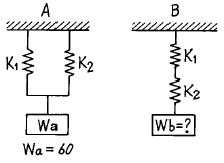
- 9 kgf
- 15 kgf
- 40 kgf
- 60 kgf
(정답률: 알수없음)
37. 유속을 V(m/sec), 유량을 Q(m3/sec)라 할때 유관(流管)의 안지름 d(cm)를 구하는 식은?
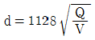
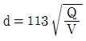
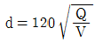
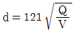
(정답률: 알수없음)
38. 재료에 일정한 응력을 가할 때에 생기는 변형량의 시간적 변화를 무엇이라 하는가?
- 비틀림
- 크리프
- 전단
- 피로
(정답률: 알수없음)
39. 하중이 걸리는 속도에 의한 분류 중 동하중(dynamic load)이 아닌 것은?
- 반복하중
- 교번하중
- 충격하중
- 전단하중
(정답률: 알수없음)
40. 형상기억 합금인 니티놀의 합금 성분은?
- Ti-Ni
- Ti-Mn
- Ni-cd
- Ni-Ag
(정답률: 알수없음)
3과목: 기계제도 및 CNC 공작법
41. 다이캐스팅용 합금으로 요구되는 성질을 설명한 것 중 틀린 것은?
- 유동성이 좋을 것
- 급랭에 대한 접착성이 좋을 것
- 열간취성이 적을 것
- 응고 수축에 대한 용탕 보급성이 좋을 것
(정답률: 알수없음)
42. 브레이크 작동력의 전달방법에 따라 분류할 때 이에 속하지 않는것은?
- 공기 브레이크
- 유압 브레이크
- 축압 브레이크
- 전자 브레이크
(정답률: 알수없음)
43. 도면의 크기에서 A1 의 면적은 A4 의 면적의 몇 배 인가?
- 1/16
- 1/8
- 16
- 8
(정답률: 알수없음)
44. 다음 도면에서 120 숫자 위의 기호가 뜻하는 것은?
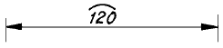
- 호(弧)
- 참고 치수
- 현(弦)
- 비례척이 아님
(정답률: 알수없음)
45. 끼워 맞춤 공차 H7m5 는 어떤 끼워 맞춤인가?
- 축 기준식 억지 끼워 맞춤
- 구멍 기준식 중간끼워 맞춤
- 축 기준식 헐거운 끼워 맞춤
- 구멍 기준식 억지 끼워 맞춤
(정답률: 알수없음)
46. 다음 표면거칠기 도시기호의 해석으로 틀린 것은?
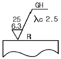
- 가공방법은 연삭가공
- 기준길이는 2.5㎜
- 거칠기 하한은 6.3μm
- 가공으로 생긴선이 거의 방사상 모양
(정답률: 알수없음)
47. 아래와 같은 도면에서 X 로 표시된 부분의 의미은?
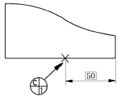
- 데이텀 표적 기호로 점
- 데이텀 표적 기호로 면
- 데이텀 표적 기호로 축
- 데이텀 표적 기호로 선
(정답률: 알수없음)
48. 베어링 608 C2P6의 뜻은 다음과 같다. 틀린 것은?
- 60 - 베어링 계열번호
- 8 - 안지름 번호
- C2 - 자동조심형
- P6 - 등급기호(6급)
(정답률: 알수없음)
49. 도면에서 가는 실선으로 표시된 대각선 부분의 의미는?
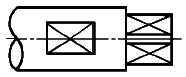
- 홈부분
- 곡면
- 평면
- 라운드 부분
(정답률: 알수없음)
50. 다음 중 광명단을 발라 실형을 뜨는 스케치법은?
- 프린트하는 방법
- 카메라를 사용하는 방법
- 모양 뜨기 방법
- 프리이핸드에 의한 방법
(정답률: 알수없음)
51. 보기의 3각법으로 나타낸 도면 중 누락된 정면도로 가장 적합한 것은?
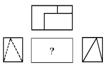
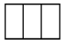
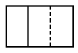
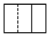
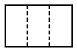
(정답률: 알수없음)
52. 보기와 같이 투상된 정면도와 우측면도에 가장 적합한 평면도는?
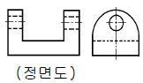
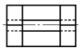
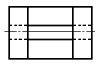
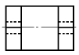
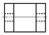
(정답률: 알수없음)
53. 보기와 같은 입체도를 3각법으로 정투상한 투상도면은?
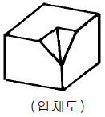
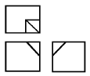
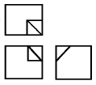
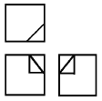
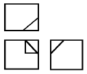
(정답률: 알수없음)
54. 보기 입체도를 제3각법으로 올바르게 제도한 투상도는?
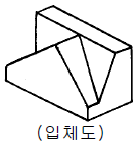
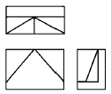
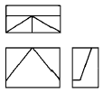
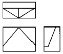
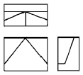
(정답률: 알수없음)
55. 전압 측정시에 사용되는 배율기에 대한 설명으로 옳지 않은 것은?
- 배율기는 직류 전압계의 외부에서 연결한다.
- 배율은 1+배율기저항/전압계내부저항으로 표시된다.
- 배율기란 일종의 저항으로 전압계와 병렬로 접속한다.
- 전압계의 측정범위를 확대하기 위한 것이다.
(정답률: 알수없음)
56. 교류의 순시값은 v = Vm sinωt[V]이다. 이 식에서 Vm은 무슨 값을 나타내는가?
- 평균값
- 실효값
- 위상값
- 최대값
(정답률: 알수없음)
57. 자력선의 성질로서 옳지 않은 것은?
- 자력선은 N극에서 나와 S극에서 끝난다.
- 자력선은 서로 교차한다.
- 자력선에 그은 접선은 그 접점에서의 자계의 방향을 나타낸다.
- 한점의 자력선의 밀도는 그 점의 자계의 세기를 나타낸다.
(정답률: 알수없음)
58. 리미트스위치의 a접점에 해당되는 것은?
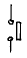
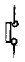
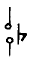
(정답률: 알수없음)
59. 맥동률이 가장 작은 정류방식은?
- 단상 반파
- 단상 전파
- 3상 반파
- 3상 전파
(정답률: 알수없음)
60. 그림과 같은 회로에서 합성저항은 몇 Ω 인가?
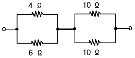
- 6.6
- 7.4
- 8.7
- 30
(정답률: 알수없음)